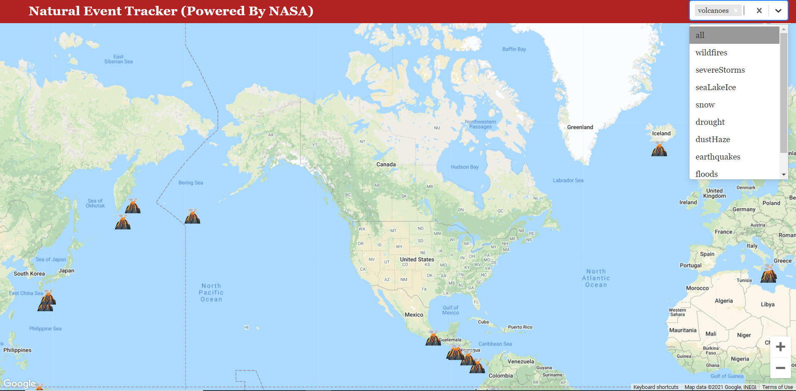
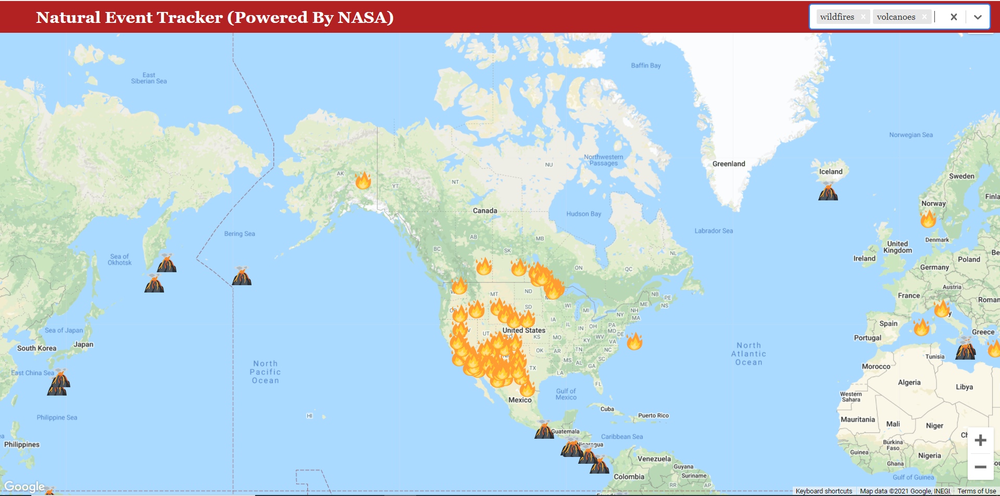

Natural Event Tracker
This project was inspired from Brad Travery(Traversy Media)
- - Fetches all type of events from NASA's EONET API
- - Displays all events in the map Using Google Map's API
- - We can filter one or more events out and display only selected events
- - Following Events are available Wildfires, Volcanoes, Severe Storms, Snow etc..
Technologies Used
- - Google Maps API
- - React JS
- - Vercel
- - Iconify Icons
Single Event

Multi Events
